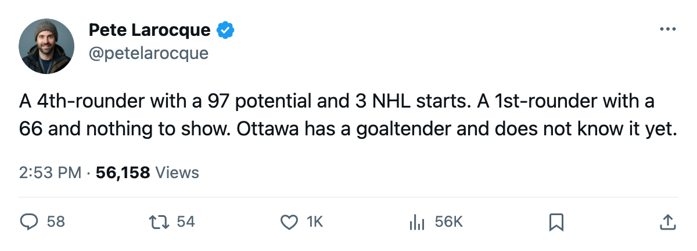

Ottawa Took Goaltending Twice In 4 Rounds. The 99th Pick Is The One With A 97
Ray Emery carries the Senators' highest potential grade. Steffen Prommersberger went 85 picks earlier in the first round and grades 16 points lower.
 Pete LarocqueScouting editor · The Prospect File
Pete LarocqueScouting editor · The Prospect File
Ray Emery84 went 99th overall in 2001. The  Ottawa Senators goaltender is 23, grades 82 overall, and carries a 97 potential grade from the Bureau's Book. That puts him in the same tier as
Ottawa Senators goaltender is 23, grades 82 overall, and carries a 97 potential grade from the Bureau's Book. That puts him in the same tier as  Rostislav Klesla87,
Rostislav Klesla87,  Mike Cammalleri83 and
Mike Cammalleri83 and  Dan Blackburn83, all at 97, among players under 23.
Dan Blackburn83, all at 97, among players under 23.
His team's 2004 first-round pick, Steffen Prommersberger68, went 14th overall. He grades 66, has played 3 games, and has 0 points at age 21.
Emery has started all 3 of Ottawa's games this season, logging 49.0 minutes a night. Prommersberger has appeared in 3 and produced nothing on the scoresheet.
Where the 97 comes from
Emery's profile in the Book shows why the Bureau rates him this high despite the low draft slot. He is a 2001 4th-rounder who has worked into a starting role at 23. A 97 potential on the 50-99 scale means the Bureau sees near-certainty he develops into an elite player. Few goaltenders carry that grade.  Pascal Leclaire91 is the best-graded netminder in the league at 89 overall with a 93 potential. Emery trails Leclaire by 7 points in overall but leads him by 4 in potential.
Pascal Leclaire91 is the best-graded netminder in the league at 89 overall with a 93 potential. Emery trails Leclaire by 7 points in overall but leads him by 4 in potential.
| player | draft | overall | potential | GP | MPG |
|---|---|---|---|---|---|
| Ray Emery | 2001 #99 (R4) | 82 | 97 | 3 | 49.0 |
| Steffen Prommersberger | 2004 #14 (R1) | 66 | 79 | 3 | — |
Emery's form on the Development Index is +5. His current overall reads five above the Book's base of 77. He is playing above his base grade. For a goaltender in his first real extended run, a +5 means development is arriving on time.
What Ottawa did with the picks around him
The Senators took Emery at 99 in 2001. Their most recent first-round pick on the roster is Prommersberger, taken 14th overall in 2004. No other Ottawa first-rounder from the last four classes appears on a league roster today.
The Senators are 1-2-0 through 3 games and sit last in the Northeast. Their 8 goals-against in 3 games is not a bad total for a team with a 97-potential goaltender in every minute, but it is also not what a 97 looks like yet. The 82 overall says he is not there. The 49.0 minutes a night says Ottawa trusts him anyway.
The late-bloomer pattern
Goaltenders get graded later than skaters because the position masks development. A 4th-rounder carrying a 97 at 23, with only 3 NHL starts, is the kind of player a draft-and-develop team trades before the development arrives. Emery is on a roster with nothing to show for its recent first rounds, and on the Development Index he is still 5 points above his base.
The Book says he is the best prospect on Ottawa's roster. The standings say the team is last in the division. One of those will be wrong by the end of the season.
